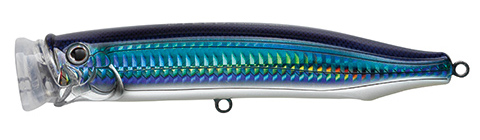
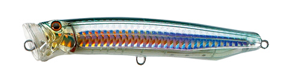
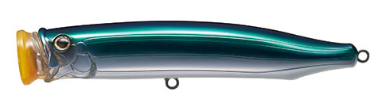

フィードダイビングウォブラー150
（FEED.DIVING WOBBLER CFDW150）
フィードダイビングウォブラー150（FEED.DIVING WOBBLER CFDW150）はTACKLE HOUSE（タックルハウス）のダイビングプラグです。
水面下、泡をまとってウォブリング。主なターゲットは、ヒラマサをはじめとするオフショアの青物です。連続したショートジャークで、水面直下を泡をまとってウォブリングで泳ぐ、ポッパーともダイビングペンシルとも違う個性を持ったプラグです。
CFDW150はシリーズのファーストモデルです。テール部分にウェイトを集中させ、浮き姿勢はほぼ垂直。連続ジャーク後のわずかなステイでも一度水面に顔を出すので、テンポよい釣りができます。

画像出典:TACKLE HOUSE公式HP
スペック
- メーカー
- TACKLE HOUSE（タックルハウス）
- タイプ
- フローティング（サーフェイス）
- 全長
- 150mm
- 重量
- 54g
- フック
- ST66#2/0
- リング
- H#8
- 搭載システム
- R-Unit2.0 Revolver・1.2mm厚3Dレーザーカット貫通ワイヤー
- ターゲット
- ヒラマサなどの青物
- 価格
- 3,000円
▼今すぐチェック
フィードダイビングウォブラー150の特徴
ポッパーでもダイビングペンシルでもない、泡をまとったウォブリング
-
泡をまとったウォブリング
連続したショートジャークで、水面直下を泡をまとってウォブリングで泳ぐ。ポッパーともダイビングペンシルとも違う動きでアピールする。
-
ほぼ垂直の浮き姿勢でテンポよく
テール部分にウェイトを集中させ、浮き姿勢はほぼ垂直。連続ジャーク後のわずかなステイでも一度しっかり水面に顔を出すので、テンポよい釣りができる。
-
ステイでも生命感を出すR-Unit2.0
ボディ横断面のウェイトルームで、ウェイト球が振り子のように動いたり軸を中心に回転したりする「R-Unit2.0 Revolver」を搭載。波間に漂う時も水と同調せず、ステイ時にも生命感を出す。
フィードダイビングウォブラー150の使い方
基本は連続したショートジャークで、水面直下を泡をまとわせながらウォブリングさせます。ジャークの後にわずかにステイさせると、一度水面に顔を出すので、ジャーク＆ステイをテンポよく繰り返しましょう。
フィードダイビングウォブラー150の得意な状況
オフショアのヒラマサキャスティングを中心に、ショアの青物まで幅広く使える基本のサイズです。
ヒラマサなどの青物がポッパーやダイビングペンシルに反応しない時に、違う動きで口を使わせたい状況が得意です。
ワンポイント
フック（ST66#2/0）とリング（H#8）が付いているので、買ってすぐに使えます。
フィードダイビングウォブラーのサイズの使い分け
| モデル | 全長・重さ | フック・リング・価格 |
|---|---|---|
| CFDW135 | 135mm・42g | ST-56#1/0・H#7・2,800円 |
| CFDW150（この記事） | 150mm・54g | ST66#2/0・H#8・3,000円 |
| CFDW175 | 175mm・70g | 別売・H#9・3,300円 |
※数値は公式ページより。各サイズの記事もあわせてご覧ください。
オススメカラー
フィードダイビングウォブラーは全15色＋ナローリフレクトカラー5色（各サイズ共通）。そのうち4色を紹介します（画像は公式のカラーチャートより）。
 07.イワシ・スリットHG
07.イワシ・スリットHG
まず1つ選ぶならこの色。イワシを食べている時の定番。

18.トビウオトビウオを食べている時に。

06.サヨリ・スリットHG細長いサヨリをイメージしたカラー。

24.マリンブルー青系のアピールカラー。澄んだ潮に。
画像出典:TACKLE HOUSE公式HP
フィードダイビングウォブラー150に似ているルアー
-
 フィードダイビングウォブラー135
タックルハウス
詳細はこちら＞
フィードダイビングウォブラー135
タックルハウス
詳細はこちら＞
同じシリーズの135mmモデル。ショア・オフショアを問わず幅広く活躍するサイズ。
-
 フィードダイビングウォブラー175
タックルハウス
詳細はこちら＞
フィードダイビングウォブラー175
タックルハウス
詳細はこちら＞
同じシリーズの175mmモデル。ダイビングペンシルとポッパーの特徴を併せ持つ大型モデル。
-
 フィードポッパー121
タックルハウス
詳細はこちら＞
フィードポッパー121
タックルハウス
詳細はこちら＞
同じフィードシリーズのポッパー。ポップ音と飛沫で誘いたい時に。